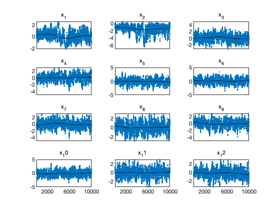
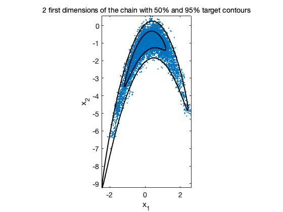

MCMC toolbox » Examples » Banana
Banana example
This techncal example constructs a non Gaussian target distribution by twisting two first dimensions of Gaussian distribution. The Jacobian of the transformation is 1, so it is easy to calculate the right probability regions for the banana and study different adaptive methods.
clear model data params options
'banana' sum-of-squares
bananafun = @(x,a,b) [a.*x(:,1),x(:,2)./a-b.*((a.*x(:,1)).^2+a^2),x(:,3:end)]; bananainv = @(x,a,b) [x(:,1)./a,x(:,2).*a+a.*b.*(x(:,1).^2+a^2),x(:,3:end)]; bananass = @(x,d) bananainv(x-d.mu,d.a,d.b)*d.lam*bananainv(x-d.mu,d.a,d.b)';
a = 1; b = 1; % banana parameters npar = 12; % number of unknowns rho = 0.9; % target correlation sig = eye(npar); sig(1,2) = rho; sig(2,1) = rho; lam = inv(sig); % target precision mu = zeros(1,npar); % center
the data structure and parameters
data = struct('mu',mu,'a',a,'b',b,'lam',lam); for i=1:npar params{i} = {sprintf('x_%d',i),0}; end model.ssfun = bananass; model.N = 1; options.method = 'dram'; options.nsimu = 10000; options.qcov = eye(npar)*0.5; % [initial] proposal covariaance
[results,chain] = mcmcrun(model,data,params,options);
Setting nbatch to 1 Sampling these parameters: name start [min,max] N(mu,s^2) x_1: 0 [-Inf,Inf] N(0,Inf) x_2: 0 [-Inf,Inf] N(0,Inf) x_3: 0 [-Inf,Inf] N(0,Inf) x_4: 0 [-Inf,Inf] N(0,Inf) x_5: 0 [-Inf,Inf] N(0,Inf) x_6: 0 [-Inf,Inf] N(0,Inf) x_7: 0 [-Inf,Inf] N(0,Inf) x_8: 0 [-Inf,Inf] N(0,Inf) x_9: 0 [-Inf,Inf] N(0,Inf) x_10: 0 [-Inf,Inf] N(0,Inf) x_11: 0 [-Inf,Inf] N(0,Inf) x_12: 0 [-Inf,Inf] N(0,Inf)
figure(1); clf
mcmcplot(chain,[],results.names,'chainpanel')
 figure(2); clf mcmcplot(chain,[1,2],results.names,'pairs',0) c50=1.3863; % critical values from chisq(2) distribution c95=5.9915; hold on [xe,ye]=ellipse(mu,c50*sig(1:2,1:2)); xyplot(bananafun([xe,ye],a,b),'k-','LineWidth',2) [xe,ye]=ellipse(mu,c95*sig(1:2,1:2)); xyplot(bananafun([xe,ye],a,b),'k-','LineWidth',2) axis equal hold off title('2 first dimensions of the chain with 50% and 95% target contours')